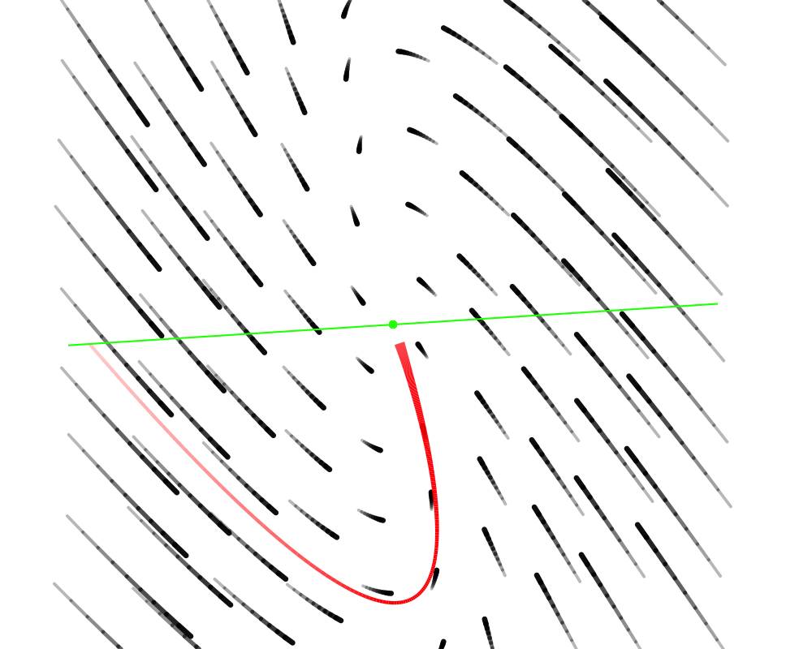
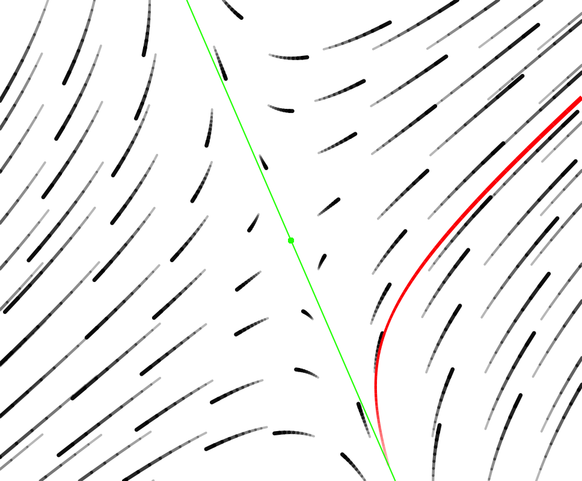

There are four differential equation models that are so commonly encountered that you should memorize the qualitative solutions. For all but one, you should have the quantitative solution readily at hand.
Exponential growth/decay to zero
The model is \[\dot{x} = a x \ \ \implies\ \ \ x(t) = A e^{a t}\] that is to say the dynamical function is a linear (proportional) function. The heading gives the description of the qualitative solution: exponential growth and decay. The free parameter \(A\) in the quantitative solution will be the numerical value of \(x(0)\).
This is a model of population growth and radioactive decay among very many other settings. Whether it’s growth or decay is set by the parameter \(a\): positive for growth, negative for decay.
Exponential growth/decay to a non-zero fixed point
The model is \[\dot{x} = -a (x - K) \ \ \implies\ \ x(t) = K + Ae^{-at}\]
This is most famously “Newton’s Law of Cooling,” where \(x(t)\) is the changing temperature as a function of time and \(K\) is the ambient (e.g. room) temperature. The object’s temperature decays exponentially to the ambient temperature.
Logistic growth to the carrying capacity \(\kappa\)
The model is \[\dot{x} = r x (1 - x/\kappa)\ \ \implies\ \ \ x(t) = \left\{\begin{array}{lcc}\mbox{sigmoidal growth to }\kappa & \mbox{ if } & x(0) < \kappa\\ \mbox{stable at }\kappa & \mbox{ if } & x(0) = \kappa\\ \mbox{exponential decay to }\kappa & \mbox{ if } & x(0) > \kappa \end{array}\right.\]
In some ways, this is like Newton’s Law. Eventually the solution will be approximately exponential decay to the fixed point \(\kappa\).
Why “eventually?” Because when \(0 < x(0) \ll \kappa\) the solution will at first be exponential growth from zero before settling down to exponential decay to the fixed point \(\kappa\).
This model is most famously associated with ecology and the growth of a population in an environment where resources needed for life are limited. The “carrying capacity” is the largest steady population that can be sustained.
Linear 2-dimensional dynamics near a fixed point
We’re writing this model as \[\left\{\begin{array}{l}\strut\dot{x} = a x + b y \\ \strut\dot{y} = x \end{array} \right.\] and calling it the “[ab10]” model.
The [ab10] model has a fixed point at the origin (that is, \((x=0, y=0)\)). This fixed point is either stable or unstable depending on the parameters \(a\) and \(b\). Also, depending on the values of \(a\) and \(b\) the flows will have one of just a few different forms:
- a stable “node”
- an unstable “source”
- a “saddle” which is effectively unstable.
- an unstable (outward) “spiral”
- a stable (inward) “spiral”
Each of these behaviors is “generic,” which is to say that there is a range of \(a\) and \(b\) values that will produce each of them.
Another possible behavior is called a “center,” something between an unstable and a stable spiral. In other words, the trajectory is a closed loop. To be a center, \(a\) must be exactly zero, no plus-or-minus about it. And \(b\) has to be less than zero.
| Sink | Saddle | Source |
|---|---|---|
|  |  |  |
| stable spiral | center | unstable spiral |
 |
 |
 |
To be sure, there are great similarities between some of the flows. For instance, in the top row,
Quiz Questions
To answer this question, it helps to notice that the given initial condition \(x(0) = 70\) is above the carrying capacity of 50. So the solution will be exponential decay toward the carrying capacity.